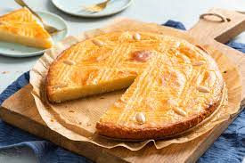

Dutch Boterkoek

Description
Boterkoek, buttercake in English is a famous Dutch cake, made of the main ingredients butter, flour and sugar
Ingredients
- 250 grams of flower
- 200 grams of sugar
- 200 grams unsalted butter
- 8 grams vanilla sugar
- 1 egg + 1 extra egg to put on top
- a pinch of salt
- springform tin of 24 or 26 centimeters
Steps
- Mix the butter and both types of sugar in a bowl until fluffy
- Add the egg and a pinch of salt
- Add the flour and mix it well into the dough
- Grease the baking tin and divide the dough over the bottom
- Brush the dough with a beaten egg and make a pattern in the cake with a fork
- Bake the butter cake in 25-30 minutes until golden brown at 180 °C (top and bottom heat)
- Let the cake cool and cut into wedges
Main Page